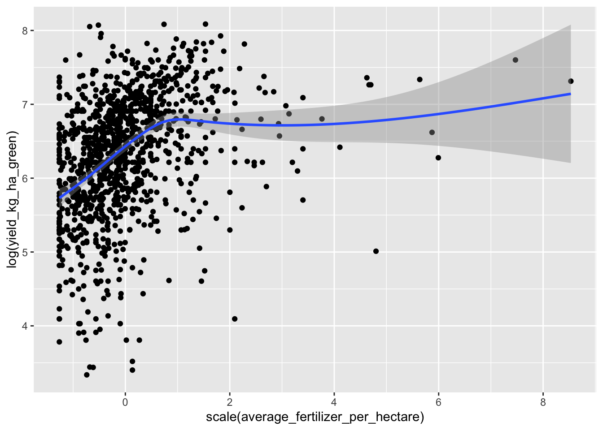

── Attaching core tidyverse packages ──────────────────────── tidyverse 2.0.0 ──
✔ dplyr 1.1.4 ✔ readr 2.1.5
✔ forcats 1.0.0 ✔ stringr 1.5.1
✔ ggplot2 4.0.1 ✔ tibble 3.2.1
✔ lubridate 1.9.3 ✔ tidyr 1.3.1
✔ purrr 1.0.2
── Conflicts ────────────────────────────────────────── tidyverse_conflicts() ──
✖ dplyr::filter() masks stats::filter()
✖ dplyr::lag() masks stats::lag()
ℹ Use the conflicted package (<http://conflicted.r-lib.org/>) to force all conflicts to become errors
library(lme4)
Loading required package: Matrix
Attaching package: 'Matrix'
The following objects are masked from 'package:tidyr':
expand, pack, unpack
library(rstanarm)
Loading required package: Rcpp
This is rstanarm version 2.32.2
- See https://mc-stan.org/rstanarm/articles/priors for changes to default priors!
- Default priors may change, so it's safest to specify priors, even if equivalent to the defaults.
- For execution on a local, multicore CPU with excess RAM we recommend calling
options(mc.cores = parallel::detectCores())
options(mc.cores =4)
This post demonstrates working with generalized linear mixed models in the context of coffee bean yield data. Each row in the following dataset is an observation of coffee bean yield from a single farm over the past year. Note that this dataset comes from cluster sampling. First, a random sample of supply units were chosen. Then, within each supply unit, a random sample of farms in the same cluster is taken. The number of farms sampled from each sampling unit is proportional to the size of the sampling unit, making sample means unbiased estimates of population means.
data <-read_csv("coffee.csv")
New names:
Rows: 1168 Columns: 19
── Column specification
──────────────────────────────────────────────────────── Delimiter: "," chr
(7): supply_unit, region, obs_shade, ipm_methods, last_replanted, last_... dbl
(10): ...1, farm_altitude_meters, coffee_farm_size_ha, main_stems_count,... lgl
(2): had_recent_soil_or_leaf_test, used_test_results
ℹ Use `spec()` to retrieve the full column specification for this data. ℹ
Specify the column types or set `show_col_types = FALSE` to quiet this message.
• `` -> `...1`
data |>select(ipm_methods, region, supply_unit, obs_shade)
We’ll need to do a little pre-processing first. The column listing pest management techniques (ipm_methods) can contain multiple treatment names, separated by a space. We’ll expand these into binary categories.
extract_categories <-function(data, s) { data |>separate_longer_delim(cols = {{ s }}, delim=" ") |>mutate(value =1) |>pivot_wider(names_from = {{ s }},values_from = value,values_fill =0 )}
We’ll also convert the obs_shade and last_replanted columns to factors.
data <- data |>mutate(obs_shade=strtoi(str_match(obs_shade, "_(\\d+)_percent")[,2]),last_replanted=factor(last_replanted,levels=c("more_than_5_years_ago", "2_5_years_ago", "within_the_last_two_years"),ordered=TRUE),obs_shade=factor(obs_shade, ordered =TRUE)) |>extract_categories(ipm_methods)
Now, on to the main question: does shade decrease yield? The following plot certainly suggests it does.
data |>ggplot(aes(obs_shade, yield_kg_ha_green)) +geom_boxplot()
But there’s likely confounders here. Higher altitude farms might both get less shade and have soils less amenable to high yields.
data |>ggplot(aes(scale(farm_altitude_meters), log(yield_kg_ha_green))) +geom_point() +facet_wrap(~obs_shade) +geom_smooth()
`geom_smooth()` using method = 'loess' and formula = 'y ~ x'
Generalized linear mixed model fit by maximum likelihood (Laplace
Approximation) [glmerMod]
Family: Gamma ( log )
Formula: yield_kg_ha_green ~ obs_shade + scale(farm_altitude_meters) +
(1 | region/supply_unit)
Data: data
AIC BIC logLik deviance df.resid
17386.2 17431.8 -8684.1 17368.2 1159
Scaled residuals:
Min 1Q Median 3Q Max
-1.4288 -0.7563 -0.2222 0.5141 5.3585
Random effects:
Groups Name Variance Std.Dev.
supply_unit:region (Intercept) 0.02685 0.1639
region (Intercept) 0.01471 0.1213
Residual 0.45488 0.6744
Number of obs: 1168, groups: supply_unit:region, 20; region, 8
Fixed effects:
Estimate Std. Error t value Pr(>|z|)
(Intercept) 6.485595 0.092593 70.044 <2e-16 ***
obs_shade.L -0.233903 0.106632 -2.194 0.0283 *
obs_shade.Q 0.020627 0.088579 0.233 0.8159
obs_shade.C 0.045673 0.059993 0.761 0.4465
obs_shade^4 0.009596 0.039745 0.241 0.8092
scale(farm_altitude_meters) -0.037419 0.022113 -1.692 0.0906 .
---
Signif. codes: 0 '***' 0.001 '**' 0.01 '*' 0.05 '.' 0.1 ' ' 1
Correlation of Fixed Effects:
(Intr) obs_.L obs_.Q obs_.C obs_^4
obs_shade.L 0.135
obs_shade.Q 0.289 0.415
obs_shade.C 0.122 0.692 0.362
obs_shade^4 0.143 0.162 0.403 0.230
scl(frm_l_) 0.002 0.146 -0.033 0.028 0.019
We see a pretty clear negative linear relationship between shade coverage and yield. To decrease the variance of our estimate, we can try controlling for other factors. Let’s factor in fertilizer use.
data |>ggplot(aes(scale(average_fertilizer_per_hectare), log(yield_kg_ha_green))) +geom_point() +geom_smooth(span=0.2)
`geom_smooth()` using method = 'gam' and formula = 'y ~ s(x, bs = "cs")'

It seems like fertilizer has a highly nonlinear relationship with yield. Let’s just look at quantiles.
data <- data |>mutate(fertilizer_quantile =ntile(average_fertilizer_per_hectare, 4))
data |>ggplot(aes(fertilizer_quantile, log(yield_kg_ha_green))) +geom_bar(stat="identity")
Interestingly, controlling for pest mitigation methods makes the effect of altitude seem much less significant. An analysis of deviance lets us compare the nested models.